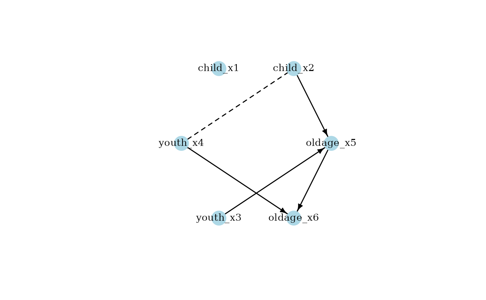
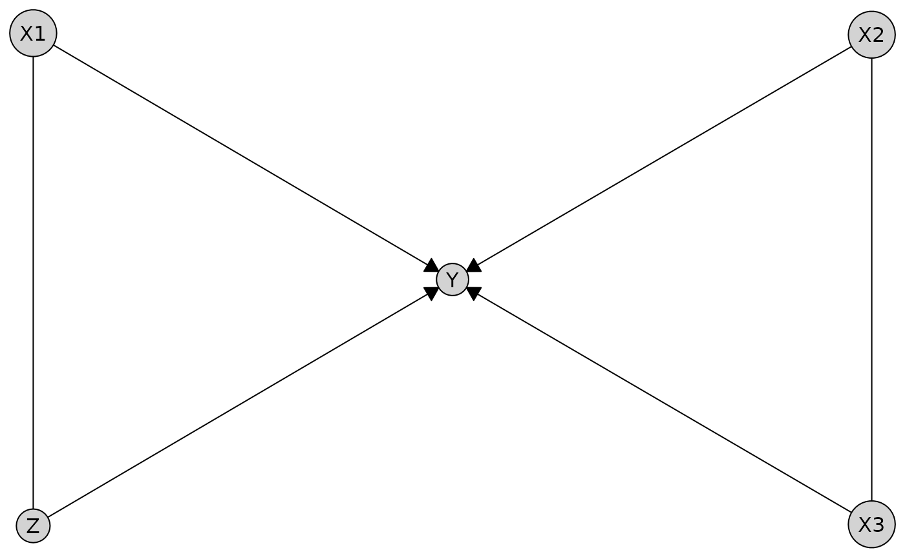

A wrapper that lets you drive bnlearn algorithms within the causalDisco framework. For arguments to the test, score, and algorithm, see the bnlearn documentation.
Public fields
dataA
data.frameholding the data set currently attached to the search object. Can be set withset_data().scoreCharacter scalar naming the score function used in bnlearn. Can be set with
$set_score(). Kebab-case score names (as used in bnlearn, e.g."pred-loglik") are also accepted and automatically translated to snake_case. Recognised values are:Continuous - Gaussian
"aic_g","bic_g","ebic_g","loglik_g","pred_loglik_g"- gaussian versions of the respective scores for discrete data."bge"- Gaussian posterior density."nal_g"- node-average log-likelihood."pnal_g"- penalised node-average log-likelihood.
Discrete – categorical
"aic"- Akaike Information Criterion."bdla"- locally averaged BDE."bde"- Bayesian Dirichlet equivalent (uniform)."bds"- Bayesian Dirichlet score."bic"- Bayesian Information Criterion."ebic"- Extended BIC."fnml"- factorised NML."k2"- K2 score."loglik"- log-likelihood."mbde"- modified BDE."nal"- node-average log-likelihood."pnal"- penalised node-average log-likelihood."pred_loglik"- predictive log-likelihood."qnml"- quotient NML.
Mixed Discrete/Gaussian
"aic_cg","bic_cg","ebic_cg","loglik_cg","nal_cg","pnal_cg","pred_loglik_cg"- conditional Gaussian versions of the respective scores for discrete data.
testCharacter scalar naming the conditional-independence test passed to bnlearn. Can be set with
$set_score(). Kebab-case test names (as used in bnlearn, e.g. "mi-adf") are also accepted and automatically translated to snake_case. Recognised values are:Continuous - Gaussian
"cor"– Pearson correlation"fisher_z"/"zf"– Fisher Z test"mc_cor"– Monte Carlo Pearson correlation"mc_mi_g"– Monte Carlo mutual information (Gaussian)"mc_zf"– Monte Carlo Fisher Z"mi_g"– mutual information (Gaussian)"mi_g_sh"– mutual information (Gaussian, shrinkage)"smc_cor"– sequential Monte Carlo Pearson correlation"smc_mi_g"– sequential Monte Carlo mutual information (Gaussian)"smc_zf"– sequential Monte Carlo Fisher Z
Discrete – categorical
"mc_mi"– Monte Carlo mutual information"mc_x2"– Monte Carlo chi-squared"mi"– mutual information"mi_adf"– mutual information with adjusted d.f."mi_sh"– mutual information (shrinkage)"smc_mi"– sequential Monte Carlo mutual information"smc_x2"– sequential Monte Carlo chi-squared"sp_mi"– semi-parametric mutual information"sp_x2"– semi-parametric chi-squared"x2"– chi-squared"x2_adf"– chi-squared with adjusted d.f.
Discrete – ordered factors
"jt"– Jonckheere–Terpstra"mc_jt"– Monte Carlo Jonckheere–Terpstra"smc_jt"– sequential Monte Carlo Jonckheere–Terpstra
Mixed Discrete/Gaussian
"mi_cg"– mutual information (conditional Gaussian)
For Monte Carlo tests, set the number of permutations using the
Bargument.algFunction generated by
$set_alg()that runs a structure-learning algorithm from bnlearn. Period.case alg names (as used in bnlearn, e.g. "fast.iamb") are also accepted and automatically translated to snake_case. Recognised values are:Constraint-based
"fast_iamb"– Fast-IAMB algorithm. Seefast_iamb()and the underlyingbnlearn::fast.iamb()."gs"– Grow-Shrink algorithm. Seegs()and the underlyingbnlearn::gs()."iamb"– Incremental Association Markov Blanket algorithm. Seeiamb()and the underlyingbnlearn::iamb()."iamb_fdr"– IAMB with FDR control algorithm. Seeiamb_fdr()and the underlyingbnlearn::iamb.fdr()."inter_iamb"– Interleaved-IAMB algorithm. Seeinter_iamb()and the underlyingbnlearn::inter.iamb()."pc"– PC-stable algorithm. Seepc()and the underlyingbnlearn::pc.stable().
paramsA list of extra tuning parameters stored by
set_params()and spliced into the learner call.knowledgeA list with elements
whitelistandblacklistcontaining prior-knowledge constraints added viaset_knowledge().
Methods
Method set_knowledge()
Set the prior knowledge for the search algorithm using a Knowledge object.
Examples
### bnlearn_search R6 class examples ###
# Generally, we do not recommend using the R6 classes directly, but rather
# use the disco() or any method function, for example pc(), instead.
# Load data
data(num_data)
# Recommended:
my_pc <- pc(engine = "bnlearn", test = "fisher_z", alpha = 0.05)
result <- my_pc(num_data)
# or
result <- disco(data = num_data, method = my_pc)
plot(result)

# Example with detailed settings:
my_pc2 <- pc(
engine = "bnlearn",
test = "mi_g",
alpha = 0.01
)
disco(data = num_data, method = my_pc2)
#>
#> ── caugi graph ─────────────────────────────────────────────────────────────────
#> Graph class: PDAG
#>
#> ── Edges ──
#>
#> from edge to
#> <chr> <chr> <chr>
#> 1 X1 --> Y
#> 2 X1 --- Z
#> 3 X2 --- X3
#> 4 X2 --> Y
#> 5 X3 --> Y
#> 6 Z --> Y
#> ── Nodes ──
#>
#> name
#> <chr>
#> 1 X1
#> 2 X2
#> 3 X3
#> 4 Z
#> 5 Y
#> ── Knowledge object ────────────────────────────────────────────────────────────
# With knowledge
kn <- knowledge(
num_data,
starts_with("X") %-->% Y
)
disco(data = num_data, method = my_pc2, knowledge = kn)
#>
#> ── caugi graph ─────────────────────────────────────────────────────────────────
#> Graph class: PDAG
#>
#> ── Edges ──
#>
#> from edge to
#> <chr> <chr> <chr>
#> 1 X1 --> Y
#> 2 X1 --- Z
#> 3 X2 --- X3
#> 4 X2 --> Y
#> 5 X3 --> Y
#> 6 Z --> Y
#> ── Nodes ──
#>
#> name
#> <chr>
#> 1 X1
#> 2 X2
#> 3 X3
#> 4 Z
#> 5 Y
#> ── Knowledge object ────────────────────────────────────────────────────────────
#>
#> ── Variables ──
#>
#> var tier
#> <chr> <chr>
#> 1 X1 NA
#> 2 X2 NA
#> 3 X3 NA
#> 4 Y NA
#> 5 Z NA
#> ── Edges ──
#>
#> ✔ X1 → Y
#> ✔ X2 → Y
#> ✔ X3 → Y
# Using additional test args (bootstrap samples)
my_iamb <- iamb(
engine = "bnlearn",
test = "mc_zf",
alpha = 0.05,
B = 100
)
disco(data = num_data, method = my_iamb)
#> ── caugi graph ─────────────────────────────────────────────────────────────────
#> Graph class: PDAG
#>
#> ── Edges ──
#>
#> from edge to
#> <chr> <chr> <chr>
#> 1 X1 --> Y
#> 2 X1 --> Z
#> 3 X2 --- X3
#> 4 X2 --> Y
#> 5 X3 --> Y
#> 6 Y --> Z
#> ── Nodes ──
#>
#> name
#> <chr>
#> 1 X1
#> 2 X2
#> 3 X3
#> 4 Z
#> 5 Y
#> ── Knowledge object ────────────────────────────────────────────────────────────
# Using R6 class:
s <- BnlearnSearch$new()
s$set_data(num_data)
s$set_test(method = "fisher_z", alpha = 0.05)
s$set_alg("pc")
g <- s$run_search()
plot(g)
